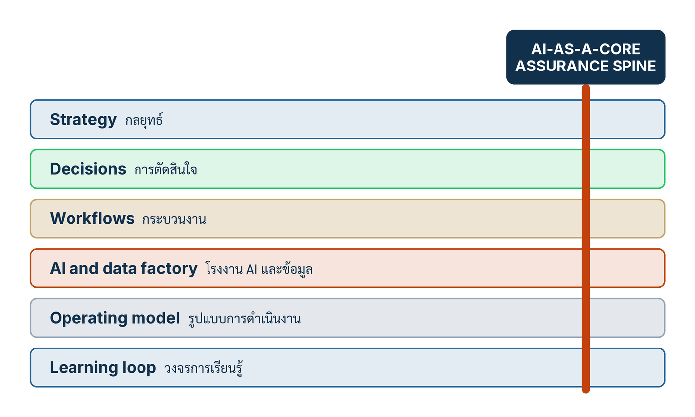

ในบทความนี้
- 1. AI Transformation ไม่ใช่การเพิ่ม AI — ช่องว่างที่ตัวเลขการใช้งานไม่ได้บอก
- 2. หกชั้นขององค์กร กับแกนเทคนิคหนึ่งแกน
- 3. ความแตกต่างสองคู่ที่ต่อรองไม่ได้
- 4. เริ่มแคบ เรียนรู้เร็ว ขยายลึก — และคุณควรเริ่มอ่านตรงไหน
- 5. Board Scorecard หกคอลัมน์ที่ห้ามยุบเป็นคะแนนเดียว
- 6. แปดคำถามที่ผู้นำต้องตอบด้วยหลักฐาน
- 7. ตัวชี้วัดสำคัญ และรูปแบบความล้มเหลวที่พบบ่อย
- 8. เส้นทางข้างหน้า — ยี่สิบตอน สี่กลุ่ม
In this post
- 1. AI Transformation Is Not More AI — The Gap the Adoption Numbers Do Not Show
- 2. Six Organizational Layers and One Technical Spine
- 3. Two Distinctions That Are Not Negotiable
- 4. Start Narrow, Learn Fast, Scale Deep — and Where You Should Start Reading
- 5. The Six-Column Board Scorecard That Must Never Collapse Into One Number
- 6. Eight Questions a Leadership Team Must Answer With Evidence
- 7. The Metrics That Matter, and the Failure Patterns That Recur
- 8. The Road Ahead — Twenty Posts, Four Groups
🤔 ถ้าคู่แข่งซื้อโมเดลเดียวกับเราได้ในบ่ายเดียว อะไรคือสิ่งที่เขาซื้อไม่ได้?
นี่คือตอนเปิดของซีรีส์ยี่สิบตอนที่ผมเขียนจาก AI Transformation as an Organizational Core คู่มือสองภาษาที่ผมเรียบเรียงขึ้นเป็นฉบับสมบูรณ์ในปี 2026[1] ซีรีส์นี้ไม่ได้เขียนให้คนที่อยากรู้ว่าโมเดลไหนเก่งกว่ากัน แต่เขียนให้คนที่ต้องตอบคณะกรรมการว่า "แล้วองค์กรเราได้อะไรขึ้นมาจริง ๆ" — และตอนนี้คือแผนที่ของทั้งเส้นทาง คุณจะได้เห็นหกชั้นขององค์กร แกนเทคนิคหนึ่งแกนที่พาดผ่านทุกชั้น แปดคำถามที่ทีมผู้นำต้องตอบได้ด้วยหลักฐาน และตารางคะแนนหกคอลัมน์ที่ห้ามยุบเป็นตัวเลขเดียว
คำตอบหนึ่งบรรทัดของคำถามข้างบนคือ สิ่งที่ซื้อไม่ได้ไม่ใช่โมเดล ไม่ใช่ license และไม่ใช่จำนวน use case แต่คือ ความสามารถขององค์กรในการเปลี่ยนข้อมูลให้กลายเป็นการตัดสินใจที่มีเจ้าของ เป็นการกระทำที่ได้รับอนุญาต และเป็นการเรียนรู้ที่ตรวจสอบได้ — เร็วกว่าสภาพแวดล้อมที่เปลี่ยนไป ที่เหลือของบทความนี้คือการแกะคำตอบนั้นออกเป็นชั้น ๆ ให้ลงมือได้จริง
1. AI Transformation ไม่ใช่การเพิ่ม AI — ช่องว่างที่ตัวเลขการใช้งานไม่ได้บอก
เริ่มจากตัวเลขที่ทุกคนอ้างกัน แล้วค่อยดูว่ามันบอกอะไรและไม่บอกอะไร Stanford AI Index 2026 รายงานว่า 88% ขององค์กรที่ตอบแบบสำรวจใช้ AI ในอย่างน้อยหนึ่ง business function ในปี 2025 เพิ่มจาก 78% ในปี 2024 และ 55% ในปี 2023[2] ตัวเลขนี้มาจากแบบสำรวจ State of AI ของ McKinsey ซึ่งผู้ตอบรายงานผลด้วยตัวเอง และรายงานเองก็เตือนไว้ตรง ๆ ว่าข้อมูลลักษณะนี้ควรอ่านแบบ "directional rather than comprehensive" พูดให้ชัดคือ มันคือสัญญาณจากแบบสำรวจ ไม่ใช่สำมะโน และไม่ใช่หลักฐานว่าคุณค่าเกิดขึ้นแล้ว
ตัวเลขฝั่ง generative AI ต้องระวังกว่านั้นอีกชั้น เพราะรายงานฉบับเดียวกันให้ค่าไว้สองค่า — กล่องสรุปข้อค้นพบและหน้าเว็บ Economy เขียนว่า 70% ขององค์กรใช้ generative AI ในอย่างน้อยหนึ่ง function ขณะที่เนื้อหา §4.3 และรูป 4.3.1 ระบุ 79% ในปี 2025 (เพิ่มจาก 71% ในปี 2024)[2] ผมยกทั้งสองค่าและบอกที่มาของแต่ละค่า เพราะการเลือกเงียบ ๆ ค่าใดค่าหนึ่งคือการซ่อนความไม่ลงรอยของแหล่งอ้างอิงจากผู้อ่าน
ส่วน AI agent ยังอยู่ระยะเริ่มต้นจริง ๆ รายงานระบุว่าการใช้แบบ scaled อยู่ในเลขหลักเดียวเกือบทุก business function และในฟังก์ชันส่วนใหญ่ ผู้ตอบส่วนใหญ่ยังตอบว่า ไม่ได้ใช้เลย ข้อยกเว้นกระจุกอยู่ในภาคเทคโนโลยี ที่การใช้แบบขยายผลใน software engineering แตะ 24%[2] คำว่า "เลขหลักเดียว" หมายถึงการใช้ที่ขยายผลแล้ว ไม่ใช่การทดลองใช้ทั้งหมด — ความต่างนี้สำคัญมากเวลาเอาไปทำสไลด์
อ่านสามย่อหน้าบนพร้อมกันแล้วจะเห็นช่องว่างที่คู่มือเล่มนี้สนใจ: การเข้าถึงเครื่องมือแพร่เร็วกว่าความสามารถขององค์กรในการมอบอำนาจ ควบคุมผล วัด Outcome และเรียนรู้ องค์กรเกือบทั้งหมดตอบว่า "ใช้ AI แล้ว" แต่จำนวนที่ปล่อยให้ระบบมีอำนาจกระทำจริงในขอบเขตที่ควบคุมได้กลับนับด้วยนิ้วมือ นี่ไม่ใช่ช่องว่างทางเทคโนโลยี แต่เป็นช่องว่างทางการออกแบบองค์กร คู่มือจึงเปิดด้วยประโยคที่ผมถือเป็นวิทยานิพนธ์ของทั้งเล่ม[1]
"การเปลี่ยนผ่านด้วย AI ไม่ใช่การเพิ่มจำนวนเครื่องมือ แต่คือการออกแบบระบบใหม่เพื่อให้องค์กรตัดสินใจ ลงมือ และเรียนรู้จากผลจริงได้เร็วขึ้น โดยยังควบคุมผลกระทบได้"
ประโยคนี้เปลี่ยนหน่วยของการวัดผลทันที ถ้า การเปลี่ยนผ่านองค์กรด้วย AI (AI transformation) คือการเพิ่มเครื่องมือ ตัวชี้วัดก็คือจำนวน license จำนวน pilot และจำนวน prompt ต่อวัน แต่ถ้ามันคือการออกแบบระบบตัดสินใจใหม่ ตัวชี้วัดจะกลายเป็นเรื่องอื่นทั้งหมด — Outcome เทียบ Baseline, อัตราการหลุดรอดของกรณีร้ายแรง, ภาระของผู้ตรวจ และเวลาจากการเห็นปัญหาไปถึงการปรับปรุงที่พิสูจน์ได้ คู่มือขยายวิทยานิพนธ์นั้นออกเป็นกลยุทธ์ประโยคเดียว ซึ่งผมจะอ้างซ้ำอีกหลายตอนตลอดซีรีส์[1]
"สร้างความสามารถขององค์กรในการเปลี่ยนข้อมูลเป็นบริบท บริบทเป็นปัญญา ปัญญาเป็นดุลยพินิจ ดุลยพินิจเป็นการกระทำที่ได้รับอนุญาต การกระทำเป็นผลลัพธ์ที่สังเกตได้ และผลลัพธ์เป็นการเรียนรู้ที่ตรวจสอบได้ เร็วกว่าสภาพแวดล้อมที่เปลี่ยนไป"
สังเกตว่าประโยคนี้ไม่มีคำว่าโมเดลอยู่เลย มันเป็นห่วงโซ่เจ็ดขั้นที่ทุกขั้นมีเจ้าของและมีหลักฐานได้ และคำที่ทำงานหนักที่สุดคือคำสุดท้าย — "เร็วกว่าสภาพแวดล้อมที่เปลี่ยนไป" นั่นคือ ความเร็วในการเรียนรู้ (learning velocity) ซึ่งเป็นหน่วยวัดที่ผมจะกลับมาหาซ้ำ ๆ ทั้งซีรีส์ ไม่ใช่ความแม่นยำของโมเดล
แล้วอะไรคือสิ่งที่คู่แข่งซื้อไม่ได้
คำถามเปิดของบทความนี้มีคำตอบเชิงวิชาการที่เก่ากว่าคลื่น AI มาก งานคลาสสิกของ Teece, Pisano & Shuen ปี 1997 ว่าด้วย dynamic capabilities เสนอว่าความได้เปรียบในการแข่งขันตั้งอยู่บน "distinctive processes" คือวิธีประสานและผสมทรัพยากรภายใน ประกอบกับสินทรัพย์ความรู้ที่ซื้อขายได้ยาก และเส้นทางการพัฒนาที่บริษัทเดินผ่านมา และสรุปว่าในสภาพแวดล้อมที่เทคโนโลยีเปลี่ยนเร็ว การสร้างความมั่งคั่งขึ้นกับการลับกระบวนการภายในด้านเทคนิค องค์กร และการบริหารเป็นหลัก[3]
ต้องพูดให้ตรง: งานชิ้นนี้เขียนขึ้นในปี 1997 และไม่ได้พูดถึง AI โมเดล หรือเครื่องมือใด ๆ ทั้งสิ้น การนำมาใช้ตอบคำถามของบทความนี้เป็นการสังเคราะห์ของผมเอง ไม่ใช่ข้อสรุปของผู้เขียนทั้งสาม แต่การจับคู่นี้ตรงจนน่าสนใจ เพราะสิ่งที่ตลาดขายให้ทุกคนเท่ากันคือโมเดลกับ API ส่วนสิ่งที่ตลาดไม่มีขายคือ บัญชีรายการการตัดสินใจของคุณ ข้อมูลบริบทที่กำกับมาแล้ว ชุดทดสอบที่สะท้อนกรณียากของธุรกิจคุณ เจ้าของที่รับผิดชอบผลจริง และวงจรที่เปลี่ยนเหตุการณ์ผิดพลาดครั้งหนึ่งให้เป็นระบบที่ดีขึ้นในรอบถัดไป นั่นคือเหตุผลที่คู่มือเล่มนี้เขียนถึงโครงสร้างองค์กรที่ล้อมโมเดลไว้ ไม่ใช่ตัวโมเดล — และโครงสร้างนั้นมีหกชั้น
2. หกชั้นขององค์กร กับแกนเทคนิคหนึ่งแกน
ภาพต่อไปนี้คือแผนที่ที่ผมอยากให้ติดอยู่ในหัวตลอดยี่สิบตอน หกแถบซ้อนกันคือหกชั้นขององค์กร และเส้นแนวตั้งเส้นเดียวที่พาดผ่านทั้งหกแถบคือแกนเทคนิค
{kind=link}

สิ่งที่ทำให้ตารางข้างล่างต่างจากไดอะแกรม "AI stack" ทั่วไปคือคอลัมน์ที่สองและสาม แต่ละชั้นไม่ได้มีแค่ชื่อ แต่มีคำถามของผู้นำที่ชั้นนั้นต้องตอบ และหลักฐานขั้นต่ำที่ต้องมีอยู่จริงถึงจะบอกได้ว่าชั้นนั้นทำงาน การจับคู่สามอย่างนี้เข้าด้วยกันคือส่วนที่คู่มือเพิ่มเข้ามา[1] ส่วนรายการหกชั้นเปล่า ๆ นั้นมาจากมาสเตอร์คลาสที่เป็นต้นทางของเล่มนี้[4]
| Layer | Leadership question | Minimum evidence |
|---|---|---|
| Strategy — กลยุทธ์ | องค์กรต้องเรียนรู้ให้เร็วขึ้นตรงไหน จึงจะชนะหรือทำพันธกิจได้สำเร็จ | Outcome เชิงกลยุทธ์ Baseline สมมติฐานเรื่องคุณค่า และระดับความเสี่ยงที่ยอมรับได้ |
| Decisions — การตัดสินใจ | การตัดสินใจซ้ำ ๆ แบบไหนที่ส่งผลต่อ Outcome นั้นมากที่สุด | บัญชีรายการการตัดสินใจ (decision inventory) พร้อมอำนาจ เจ้าของ ระดับผลกระทบ (consequence) และ Feedback |
| Workflows — กระบวนงาน | ควรแบ่งงานกันอย่างไรระหว่างคน โมเดล กฎ และ Tool | แผนที่กระบวนงานตั้งแต่ต้นจนจบ เส้นทางจัดการข้อยกเว้น กำลังการรองรับ และ telemetry ของผลลัพธ์ |
| AI and data factory — โรงงาน AI และข้อมูล | องค์ประกอบใดควรถูกทำให้ใช้ซ้ำได้ | Data product บริการบริบท ชุดเครื่องมือประเมิน ทะเบียน Tool และความสามารถในการสังเกตระบบ |
| Operating model — รูปแบบการดำเนินงาน | ใครกำหนดมาตรฐาน ใครสร้าง ใครอนุมัติ ใครดำเนินงาน และใครเรียนรู้ | สิทธิ์ตัดสินใจ ความเป็นเจ้าของผลิตภัณฑ์ กลไกท้วงติงที่เป็นอิสระ และการส่งต่อปัญหาที่มีงบประมาณรองรับ |
| Learning loop — วงจรการเรียนรู้ | แต่ละรอบทำให้รอบถัดไปดีขึ้นได้อย่างไร | จังหวะการทบทวน Trace ชุดกรณีทดสอบถดถอย บันทึกการตัดสินใจเปลี่ยนระบบ และผลที่พิสูจน์แล้ว |
| AI-as-a-Core assurance spine — แกนการรับประกัน | อะไรเป็นตัวจำกัดพฤติกรรมของโมเดลและผลกระทบที่ออกไปนอกระบบ | การจัดระดับ สัญญาการรับประกัน Manifest รางควบคุมห้าชั้น (five rails) ด่านอนุมัติการปล่อย Trace และวงจรเรียนรู้จากเหตุการณ์ผิดปกติ |
แถวสุดท้ายไม่ใช่ชั้นที่เจ็ด นี่เป็นจุดที่คนอ่านผิดบ่อยที่สุด แกน AI ที่เป็นแกนหลัก (AI-core) ไม่ได้วางซ้อนบนหรือใต้ชั้นใด แต่พาดตั้งฉากผ่านทั้งหกชั้น เพราะข้อจำกัดเรื่องพฤติกรรมของโมเดลและการควบคุมผลกระทบต้องมีอยู่พร้อมกันตั้งแต่ระดับกลยุทธ์ลงไปจนถึงระดับกระบวนงาน ในภาษาของเล่มนี้ แกนนี้ห่อหุ้ม Input, Dialogue, Retrieval, Execution และ Output ด้วยหลักฐานและการควบคุม — คือ กรอบการรับประกันรอบระบบ (assurance envelope) ซึ่งเป็นคนละสิ่งกับ สัญญาการรับประกันเชิงระบบ (assurance contract) ที่เป็นเอกสารระบุคุณสมบัติทีละข้อ สองคำนี้อย่ารวมกัน ที่มาของแกนนี้คืองานวิจัยวิศวกรรม Engineering AI-Core Systems ฉบับปรับปรุงที่แปด ซึ่งคู่มือระบุเองว่าเป็นแหล่งอ้างอิงหลักของแนวคิด AI-as-a-Core[5] งานชิ้นนั้นเป็นต้นฉบับของผู้เขียน ยังไม่เผยแพร่และไม่มี URL — ผมจึงอ้างมันแบบระบุสถานะไว้ตรง ๆ
อ่านตารางนี้ยังไงให้ใช้งานได้จริง
วิธีใช้ที่ผมแนะนำคืออ่านจากคอลัมน์ขวาสุดก่อน ไม่ใช่ซ้ายสุด ลองถามทีละชั้นว่า "หลักฐานขั้นต่ำของชั้นนี้ วันนี้เรามีไหม และมันอยู่ที่ไหน" ถ้าตอบไม่ได้ภายในสองนาที แปลว่าชั้นนั้นยังไม่มีอยู่จริง ไม่ว่าจะมีสไลด์กี่แผ่นก็ตาม การทดสอบแบบนี้โหดกว่าแบบประเมินวุฒิภาวะให้คะแนน 1–5 เพราะมันถามหาสิ่งของ ไม่ได้ถามหาความรู้สึก และชั้นทั้งหกก็ไม่ได้เรียงตามลำดับเวลาของโครงการ — องค์กรที่ไปได้ดีมักเปิดทั้งหกชั้นพร้อมกันในขอบเขตที่แคบมาก คือหนึ่งการตัดสินใจ หนึ่งกระบวนงาน หนึ่งทีม แล้วค่อยขยาย ซึ่งพาเราไปสู่จังหวะในหัวข้อ 4
3. ความแตกต่างสองคู่ที่ต่อรองไม่ได้
ถ้าอ่านบทความนี้ได้แค่หัวข้อเดียว ผมอยากให้เป็นหัวข้อนี้ สองประโยคข้างล่างสั้นมาก แต่มันคือเส้นแบ่งระหว่างโครงการ AI ที่ควบคุมได้ กับการทดลองที่ควบคุมไม่ได้
💡 มุมมองของผม: คู่มือระบุว่า "ผู้นำต้องรักษาความแตกต่างสองคู่ไว้เสมอ Prediction ไม่ใช่ Decision เพราะการคาดหมายยังไม่เลือกเป้าหมาย ชั่งผลกระทบ หรือรับผิดชอบ และ Proposal ไม่ใช่ Effect เพราะข้อเสนอของโมเดลยังต้องผ่านระบบภายนอกที่ตรวจ Identity, Authority, Schema, วงเงิน ความเสี่ยง Approval และสถานะจริงหลังทำรายการ"[1] — ผมถือสองประโยคนี้เป็นข้อสอบข้อแรกของทุกโครงการที่เข้ามาให้ผมทบทวน ถ้าทีมตอบไม่ได้ว่าใครเป็นคนตัดสินใจ และอะไรคือระบบที่ยืนขวางระหว่างข้อเสนอกับผลจริง เรายังไม่ต้องคุยเรื่องโมเดลกัน
Prediction ไม่ใช่ Decision
การคาดการณ์ตอบคำถามว่า อะไรน่าจะเกิดขึ้น ส่วนดุลยพินิจตอบคำถามที่ต่างออกไปสี่ข้อ — เราเลือกเป้าหมายอะไร ชั่งผลกระทบอย่างไร ใช้คุณค่าชุดไหนตัดสิน และใครรับผิดชอบเมื่อผลออกมาไม่ดี คู่มืออธิบายห่วงโซ่ที่สมบูรณ์ว่าเป็น data → estimate → judgment → action → outcome → feedback[1] โมเดลช่วยตรงขั้น estimate เท่านั้น ขั้นที่เหลือยังเป็นขององค์กร
การสับสนสองอย่างนี้ผลิตสิ่งที่ผมเรียกว่าการตัดสินใจไร้เจ้าของ — ทีมสร้าง dashboard ที่พยากรณ์ความเสี่ยงลูกค้าได้แม่นยำ แล้วปล่อยให้พนักงานหน้างานตีความเอาเองว่าคะแนนเท่าไรถึงควรระงับบัญชี เมื่อเกิดเรื่อง ไม่มีใครเป็นเจ้าของเกณฑ์นั้น เพราะไม่เคยมีใครเขียนมันลงไปว่าเป็นการตัดสินใจ พร้อม อำนาจตัดสินใจ (decision authority) และ ความรับผิดรับชอบ (accountability) ที่ชัดเจน วิธีแก้ไม่ได้อยู่ที่การทำให้โมเดลแม่นขึ้น แต่อยู่ที่การเขียนการตัดสินใจนั้นออกมาเป็นรายการ ระบุเจ้าของ ระบุ Threshold ระบุกรณีร้ายแรงที่ต้องส่งต่อคน และระบุว่าจะรู้ได้อย่างไรว่าเกณฑ์ที่ตั้งไว้ผิด นี่คืองานของชั้น Decisions และเป็นหัวใจของตอน #2 กับ #5
Proposal ไม่ใช่ Effect — การแยกข้อเสนอออกจากผลจริง
คู่ที่สองคือ การแยกข้อเสนอออกจากผลจริง (proposal–effect separation) โมเดลอาจเสนอให้เรียก Tool ชื่อหนึ่งพร้อมพารามิเตอร์และเหตุผลประกอบที่ฟังดูดีมาก แต่สิ่งที่มันผลิตออกมาคือ ข้อเสนอ ไม่ใช่ ผล ระหว่างสองสิ่งนี้ต้องมีระบบภายนอกที่เป็นอิสระจากโมเดล ทำหน้าที่ตรวจตัวตน อำนาจ โครงสร้างข้อมูล พารามิเตอร์ ความเสี่ยง การอนุมัติ วงเงินของรายการ และสถานะจริงหลังทำรายการ ก่อนที่ผลนั้นจะถูกยอมรับว่าเกิดขึ้นแล้ว[1]
คำสำคัญคือ "เป็นอิสระจากโมเดล" ถ้าการตรวจสอบเหล่านี้ถูกเขียนไว้ใน system prompt มันไม่ใช่การควบคุม มันคือคำขอร้อง โมเดลที่ถูก prompt injection หรือหลุดจากขอบเขตจะข้ามคำขอร้องได้ทั้งหมด แต่ข้ามโค้ดที่ตรวจวงเงินก่อนเรียก API ไม่ได้ นี่คือความต่างระหว่าง การรับประกันเชิงโครงสร้าง กับ ค่าประเมินเชิงความหมาย ซึ่งเป็นหัวข้อเต็ม ๆ ของตอน #13
ที่สำคัญ การแยกสองอย่างนี้เป็นเครื่องมือปลดล็อก ไม่ใช่แค่เครื่องมือห้าม เพราะเมื่อมีระบบตรวจก่อนเกิดผลที่เชื่อถือได้ คุณจะกล้าให้ AI มีอำนาจกระทำมากขึ้นในขอบเขตที่กำหนด องค์กรที่ไม่มีระบบนี้จึงติดอยู่ที่ระดับ "AI ร่างให้ แล้วคนพิมพ์ซ้ำ" ตลอดไป — ไม่ใช่เพราะโมเดลไม่เก่งพอ แต่เพราะไม่มีใครกล้าเซ็นอนุมัติให้มันทำอะไรเอง
4. เริ่มแคบ เรียนรู้เร็ว ขยายลึก — และคุณควรเริ่มอ่านตรงไหน
จังหวะการเปลี่ยนผ่านของคู่มือเล่มนี้มีสามคำ ผมใช้มันเป็นชื่อจังหวะตลอดซีรีส์: เริ่มแคบ เรียนรู้เร็ว ขยายลึก
"จังหวะการเปลี่ยนผ่านคือ เริ่มแคบ เรียนรู้เร็ว และขยายลึก เลือกหนึ่งถึงสาม Decision ที่มีคุณค่าและ Feedback กำหนด Baseline, Threshold, Severe Case และ Stop Condition ล่วงหน้า แล้วขยายด้วย Data Product, Context, Control, Evaluation, Role และ Incident Learning ที่ใช้ซ้ำได้ ไม่ขยายเพียงจำนวน License หรือ Prompt"[1]
ข้อความข้างบนคือฉบับภาษาไทยที่คู่มือเขียนไว้เอง ส่วนฉบับภาษาอังกฤษของเล่มเดียวกันลงรายละเอียดมากกว่านั้นอีกชั้นหนึ่ง — ผมแปลไว้ดังนี้ ขอระบุให้ชัดว่านี่เป็นคำแปลของผม ไม่ใช่ข้อความภาษาไทยที่หนังสือพิมพ์ไว้: เริ่มแคบ ด้วยการตัดสินใจหนึ่งถึงสามข้อที่มีคุณค่า เกิดบ่อย มีหลักฐานมาก และสามารถผลิต Feedback ได้ · เรียนรู้เร็ว ด้วยการประกาศ Baseline, Threshold, กรณีร้ายแรง, เงื่อนไขหยุด และวันทบทวนครั้งแรกไว้ล่วงหน้า · ขยายลึก ด้วยการใช้ซ้ำข้อมูลที่กำกับแล้ว บริบท การควบคุม ชุดประเมิน บทบาทปฏิบัติการ และการเรียนรู้จากเหตุการณ์ผิดปกติ ข้ามกระบวนงานที่เชื่อมถึงกัน[1]
คำที่คนมองข้ามบ่อยที่สุดคือ deep ไม่ใช่ narrow "ขยายลึก" หมายถึงการขยายสิ่งที่ใช้ซ้ำได้ ไม่ใช่การขยายจำนวนผู้ใช้ ถ้า use case ที่สองต้องสร้าง data pipeline ใหม่ ชุดทดสอบใหม่ และระบบตรวจก่อนเกิดผลใหม่ทั้งหมด แปลว่าคุณไม่ได้ขยาย คุณกำลังเริ่มใหม่เป็นครั้งที่สอง คู่มือจึงย้ำว่าอย่าขยายเพียงจำนวน License หรือ Prompt[1]
ส่วน Learn fast มีเงื่อนไขซ่อนอยู่ที่คนชอบทำหล่น: ทุกอย่างในรายการนั้นต้องประกาศล่วงหน้า ถ้า Baseline ถูกกำหนดหลังจากเห็นผลแล้ว มันไม่ใช่ Baseline มันคือการเล่าเรื่อง และถ้าไม่มีเงื่อนไขหยุดกับวันทบทวนครั้งแรกเขียนไว้ตั้งแต่ต้น โครงการจะกลายเป็น pilot ถาวรที่ไม่มีใครกล้าปิดและไม่มีใครกล้าขยาย
คุณควรเริ่มอ่านซีรีส์นี้ตรงไหน
คู่มือมีตาราง "How to read this book" ที่จับคู่ประเภทผู้อ่านกับบทที่ควรอ่านก่อน[1] ผมแปลงตารางนั้นให้เข้ากับโครงยี่สิบตอนของซีรีส์ — ขอย้ำว่าการจับคู่ผู้อ่านกับหมายเลขตอนเป็นการเรียบเรียงของผมเอง ไม่ใช่สิ่งที่หนังสือกำหนดไว้ คอลัมน์ "Leave with" คือของหนังสือ
| Reader | Start here | Leave with |
|---|---|---|
| คณะกรรมการและทีมผู้บริหาร | ตอนนี้ · #3 · #10 · #18 · #19 | ทางเลือกเชิงกลยุทธ์ ระดับความเสี่ยงที่ยอมรับได้ scorecard ของการดำเนินงาน และ mandate 180 วัน |
| เจ้าของธุรกิจและเจ้าของกระบวนงาน | #5 · #6 · #7 · #20 | พอร์ตโฟลิโอการตัดสินใจ กระบวนงานที่ออกแบบใหม่ ตัวชี้วัดผลลัพธ์ และการทดลองภาคสนาม |
| ทีมเทคโนโลยีและข้อมูล | #9 · #11 · #13 · #14 | การออกแบบโรงงาน Manifest ขณะทำงาน รางควบคุม การประเมิน และหลักฐานก่อน Release |
| ความเสี่ยง กฎหมาย ความเป็นส่วนตัว และความมั่นคง | #12 · #13 · #15 · #16 | การจัดระดับ สัญญาการรับประกันเชิงระบบ Trace แผนที่ผลกระทบ และวงจรเรียนรู้จากเหตุการณ์ผิดปกติ |
| ผู้นำด้านคนและการเปลี่ยนแปลง | #4 · #6 · #8 · #10 | การออกแบบงานใหม่ระดับภารกิจ เส้นทางทักษะ เสียงและการมีส่วนร่วมของพนักงาน และข้อตกลงร่วมเรื่องกำลังคน |
| ผู้ดำเนินเวิร์กช็อปและโปรแกรม | #18 · #19 · #20 | Canvas เช็กลิสต์ Scorecard ที่ใช้ได้ทันที และภาษากลางที่ใช้ร่วมกันทั้งองค์กร |
ถ้าคุณไม่แน่ใจว่าตัวเองอยู่แถวไหน ให้อ่านตอนนี้จบแล้วข้ามไป #5 เพราะการเลือกการตัดสินใจหนึ่งถึงสามอย่างมาลงมือจริงคือขั้นที่แยกองค์กรที่เปลี่ยนผ่านได้ออกจากองค์กรที่พูดเรื่องเปลี่ยนผ่านมาสองปี
5. Board Scorecard หกคอลัมน์ที่ห้ามยุบเป็นคะแนนเดียว
ถึงจุดนี้คำถามของคณะกรรมการจะเปลี่ยนจาก "เราทำอะไรอยู่" เป็น "เราดูอะไรถึงจะรู้ว่ามันได้ผล" คู่มือตอบด้วยตารางหกคอลัมน์ที่ออกแบบมาให้อ่านพร้อมกัน ไม่ใช่เลือกอ่านทีละคอลัมน์[1] ตารางข้างล่างคือเวิร์กช็อปที่ลอกไปใช้ได้ แถวบนสุดเป็นตัวชี้วัดตามที่คู่มือกำหนด ส่วนสามแถวล่างเป็นของคุณ — ผมใส่ตัวอย่างไว้ให้เห็นรูปแบบเท่านั้น ไม่ใช่ค่าที่ถูกต้องขององค์กรใด
| Value | Quality | Risk | People | Learning | Economics | |
|---|---|---|---|---|---|---|
| ตัวชี้วัด | Outcome ที่ดีขึ้นเทียบกับ Baseline | อัตราสำเร็จของงาน และข้อกล่าวอ้างที่มีหลักฐานรองรับ แยกตามกลุ่มกรณี | การหลุดรอดของกรณีร้ายแรง ผลกระทบที่ไม่ได้รับอนุญาต และความเสี่ยงคงเหลือที่ยังไม่จัดการ | การยอมรับใช้งาน ความชำนาญ ภาระของผู้ตรวจ ความไว้วางใจ และการโยกย้ายงาน | Feedback latency เวลาถึงการปรับปรุงที่พิสูจน์แล้ว และอัตราการเกิดซ้ำ | ต้นทุนรวมต่อหนึ่ง Successful Outcome และสัดส่วนความสามารถที่ใช้ซ้ำได้ |
| แหล่งหลักฐาน | ระบบธุรกรรมหลัก เทียบกับ Baseline ที่ประกาศไว้ก่อนเริ่ม | ชุดทดสอบตรึง ชุดทดสอบซ่อน และการสุ่มตรวจงานจริง | บันทึกเหตุการณ์ผิดปกติ และ log ของระบบตรวจก่อนเกิดผล | แบบสำรวจพนักงาน สถิติภาระคิว และข้อมูลฝ่ายบุคคล | Trace ของระบบ และบันทึกการตัดสินใจเปลี่ยนระบบ | บิลจากผู้ให้บริการ ต้นทุนคน และทะเบียนองค์ประกอบที่ใช้ซ้ำ |
| เจ้าของ | เจ้าของ Outcome ฝั่งธุรกิจ | เจ้าของกระบวนงาน ร่วมกับทีมประเมิน | ความเสี่ยงและกฎหมาย โดยเป็นอิสระจากทีมสร้าง | ผู้นำด้านคนและหัวหน้าหน่วยงานหน้างาน | เจ้าของแพลตฟอร์มและวงจรการเรียนรู้ | การเงินร่วมกับเจ้าของแพลตฟอร์ม |
| วันทบทวน | ทุกไตรมาส | ทุกเดือน | ทุกเดือน และทันทีเมื่อเกิดเหตุ | ทุกไตรมาส | ทุกสองสัปดาห์ | ทุกไตรมาส |
กฎที่สำคัญที่สุดของตารางนี้ไม่ได้อยู่ในช่องไหนเลย แต่อยู่ในประโยคที่ตามหลังมัน ฉบับภาษาไทยของคู่มือสรุปไว้สั้นที่สุดว่า[1]
"Board Scorecard ต้องอ่านหกมิติร่วมกัน … คะแนนรวมหนึ่งค่าไม่ควรซ่อนการแลกเปลี่ยน"
ฉบับภาษาอังกฤษขยายความข้อนี้ออกเป็นสามประโยค ซึ่งผมแปลไว้ข้างล่าง — อีกครั้ง นี่เป็นคำแปลของผมจากต้นฉบับภาษาอังกฤษ ไม่ใช่ข้อความภาษาไทยที่หนังสือพิมพ์ไว้[1] ไม่ควรมีคะแนนรวมค่าเดียวมาแทนที่มุมมองนี้ กระบวนการที่เร็วขึ้นแต่ความผิดพลาดร้ายแรงเพิ่มขึ้น ไม่ใช่ความก้าวหน้า ระบบที่ปลอดภัยแต่ไม่สร้างคุณค่าใด ๆ ไม่ใช่การเปลี่ยนผ่าน และกระบวนงานที่ผลิตงานได้มากแต่ทำให้ผู้ตรวจหมดแรง ไม่ใช่สิ่งที่ยั่งยืน
สามประโยคนี้อ่านเหมือนคำเตือนธรรมดา แต่มันคือการปิดทางหนีสามทางที่พบบ่อยที่สุดในรายงานต่อคณะกรรมการ — รายงานความเร็วโดยไม่รายงานคุณภาพ รายงานความปลอดภัยโดยไม่รายงานคุณค่า และรายงานผลผลิตโดยไม่รายงานภาระที่ตกกับคนตรวจ ในทางปฏิบัติ ผมแนะนำให้กำหนดกติกาไว้ตั้งแต่วันแรกว่า คอลัมน์ใดที่แย่ลงจะยับยั้งการขยายผลได้ทันที แม้คอลัมน์อื่นจะดีขึ้นทั้งหมด โดยเฉพาะ Risk และ People ซึ่งเสียหายช้าและซ่อมยากที่สุด การประกาศกติกานี้ล่วงหน้าจะช่วยคุณตอนที่ตัวเลข Value กำลังสวยและทุกคนอยากเร่ง
6. แปดคำถามที่ผู้นำต้องตอบด้วยหลักฐาน
คู่มือตั้งเป้าไว้ตรงไปตรงมาว่า เมื่ออ่านจบ ทีมผู้นำควรตอบคำถามแปดข้อได้ด้วยหลักฐาน[1] ผมยกทั้งแปดข้อมาไว้ตั้งแต่ตอนแรก เพราะมันคือเกณฑ์ที่ผมจะใช้วัดว่าซีรีส์นี้ทำงานสำเร็จหรือไม่ สองข้อควรทราบก่อนใช้ตาราง — คำถามทั้งแปดข้อในหนังสือเป็นภาษาอังกฤษ ฉบับภาษาไทยข้างล่างเป็นคำแปลของผมเอง ไม่ใช่ข้อความที่หนังสือเขียนไว้เป็นภาษาไทย และคอลัมน์ "Post that helps" ก็เป็นการจับคู่ของผมจากโครงซีรีส์ ไม่ใช่การกำหนดของหนังสือ
| Question | Evidence we have today | Gap | Post that helps |
|---|---|---|---|
| Q1 เรากำลังพยายามปรับปรุง Outcome ขององค์กรข้อไหน และเราจะรู้ได้เร็วแค่ไหนว่าทำได้จริง | เอกสารกลยุทธ์ Baseline ที่ประกาศไว้ ตัวเลขก่อนเริ่ม | ส่วนใหญ่มีเป้า แต่ไม่มี Baseline และไม่มีวันที่จะรู้ผล | ตอนนี้ · #3 · #20 |
| Q2 การตัดสินใจซ้ำ ๆ ข้อใดที่สร้าง Outcome นั้น | บัญชีรายการการตัดสินใจ พร้อมความถี่และระดับผลกระทบ | มี use-case list แต่ไม่มี decision inventory | #2 · #5 |
| Q3 คน AI กฎเชิงกำหนด และ Tool ควรทำอะไรบ้างตามลำดับ | แผนที่กระบวนงาน และการแยกงานเป็นภารกิจย่อย | "มีคนอยู่ในลูป" ถูกเขียนไว้ แต่ไม่ได้ระบุว่าคนทำอะไร | #6 · #7 · #8 |
| Q4 โมเดลขาดไม่ได้จริง ๆ ตรงไหน และมันมีอำนาจแค่ไหน | การประเมิน ความขาดไม่ได้ (indispensability) คู่กับอำนาจตัดสินใจ | อำนาจถูกให้โดยปริยายผ่านการต่อ integration ไม่ใช่โดยการอนุมัติ | #4 · #11 |
| Q5 อะไรที่เราบังคับได้เชิงโครงสร้าง และอะไรที่เราทำได้แค่ประเมิน | สัญญาการรับประกันเชิงระบบ ที่แยกข้อบังคับออกจากค่าประเมิน | ข้อกำหนดความปลอดภัยอยู่ใน prompt ไม่ได้อยู่ในโค้ด | #12 · #13 |
| Q6 ต้องมีหลักฐานอะไรบ้างก่อน Release และระหว่างใช้งานจริง | ด่านอนุมัติการปล่อย ชุดประเมินหลายแทร็ก และ Trace ที่ย้อนได้ | ปล่อยตามวันที่ในแผน ไม่ได้ปล่อยตามหลักฐาน | #14 · #15 |
| Q7 ใครเป็นเจ้าของคุณค่า ความเสี่ยง ผลกระทบ ข้อยกเว้น และการเรียนรู้ | สิทธิ์ตัดสินใจที่เขียนไว้ และการส่งต่อปัญหาที่มีงบประมาณ | มีคณะกรรมการ แต่ไม่มีเจ้าของรายบุคคลต่อการตัดสินใจแต่ละข้อ | #9 · #10 · #16 · #17 |
| Q8 อะไรสมควรได้ขยาย ปรับรูป หยุดชั่วคราว หรือยุติ | Board Scorecard หกคอลัมน์ พร้อมเงื่อนไขหยุดที่ประกาศล่วงหน้า | ไม่มีใครเคยยุติ pilot ใดเลยในรอบสองปี | #5 · #18 · #19 · #20 |
วิธีใช้ที่ได้ผลที่สุดคือให้ทีมผู้นำนั่งลงพร้อมกันหนึ่งชั่วโมง เติมคอลัมน์ที่สองด้วยชื่อไฟล์หรือชื่อระบบจริง เท่านั้น ห้ามเติมด้วยประโยคบรรยาย ถ้าเติมชื่อไฟล์ไม่ได้ ให้ปล่อยว่าง ช่องว่างที่เหลืออยู่ตอนจบชั่วโมงนั้นคือแผนงานที่แท้จริงของคุณ และมันมักสั้นกว่าและคมกว่าแผนที่ที่ปรึกษาเขียนมาให้
7. ตัวชี้วัดสำคัญ และรูปแบบความล้มเหลวที่พบบ่อย
หัวข้อ 5 ให้โครงของตารางคะแนนไว้แล้ว หัวข้อนี้ตอบคำถามที่ตามมาเสมอ: ในแต่ละคอลัมน์ คณะกรรมการควรถามหาตัวเลขอะไร และตัวเลขนั้นตอบคำถามอะไรกันแน่
| Metric family | What it answers | Scorecard |
|---|---|---|
| Outcome เทียบ Baseline | ผลลัพธ์ที่องค์กรตั้งใจปรับปรุง ดีขึ้นจริงหรือไม่ เทียบกับจุดตั้งต้นที่ประกาศไว้ก่อนเริ่ม | Value |
| อัตราสำเร็จของงานแยกตามกลุ่มกรณี | ระบบทำงานได้ดีกับกรณีแบบไหน และแย่ลงกับกรณีแบบไหน | Quality |
| การหลุดรอดของกรณีร้ายแรง | มีผลกระทบร้ายแรงหรือผลที่ไม่ได้รับอนุญาตหลุดออกไปถึงผู้ใช้จริงกี่ครั้ง | Risk |
| ภาระของผู้ตรวจและการยอมรับใช้งาน | ระบบผลักภาระไปให้ใคร และคนที่ต้องตรวจงานยังไหวอยู่หรือไม่ | People |
| Feedback latency และเวลาถึงการปรับปรุงที่พิสูจน์แล้ว | จากวันที่เห็นปัญหา ใช้เวลากี่วันกว่าจะมีการเปลี่ยนแปลงที่พิสูจน์ได้ว่าดีขึ้น | Learning |
| ต้นทุนต่อ Successful Outcome | ค่าใช้จ่ายรวมต่อผลลัพธ์ที่สำเร็จหนึ่งหน่วย และสัดส่วนที่มาจากองค์ประกอบที่ใช้ซ้ำได้ | Economics |
สังเกตว่าไม่มีแถวไหนวัด "จำนวน" เลย — ไม่มีจำนวนผู้ใช้ ไม่มีจำนวน prompt ไม่มีจำนวน use case ที่ launch แล้ว นั่นเป็นความตั้งใจ ตัวเลขจำนวนคือตัวเลขที่ทำให้สวยได้ง่ายที่สุดโดยไม่ต้องเปลี่ยนอะไรเลย ส่วนแหล่งหลักฐานของแต่ละแถวคือแถว "แหล่งหลักฐาน" ในเวิร์กช็อปหัวข้อ 5
รูปแบบความล้มเหลว
- ยุบหกคอลัมน์เป็นคะแนนเดียว — นี่คือรูปแบบเดียวในสามข้อนี้ที่คู่มือเตือนไว้เองตรง ๆ ฉบับภาษาไทยเขียนสั้น ๆ ว่า "คะแนนรวมหนึ่งค่าไม่ควรซ่อนการแลกเปลี่ยน"[1] เหตุผลคือคะแนนรวมทำงานด้วยการหักลบ ความเสี่ยงที่แย่ลงจะถูกกลบด้วยต้นทุนที่ดีขึ้น และคณะกรรมการจะไม่มีวันเห็นการแลกเปลี่ยนที่เกิดขึ้นจริง
- ตั้งเป้าที่กิจกรรม ไม่ใช่ที่ผลลัพธ์ — ข้อนี้เป็นข้อสังเกตของผมเอง ไม่ใช่ข้อความจากคู่มือ เป้าแบบ "ให้พนักงานส่วนใหญ่ใช้ผู้ช่วย AI ทุกสัปดาห์" วัดพฤติกรรมการเปิดหน้าจอ ไม่ได้วัดว่าการตัดสินใจใดดีขึ้น องค์กรจะได้ตัวเลขที่ต้องการภายในหนึ่งไตรมาส และได้ความเปลี่ยนแปลงเป็นศูนย์
- ใช้จำนวน pilot เป็นเครื่องวัดวุฒิภาวะ — ข้อนี้ก็เป็นข้อสังเกตของผมเช่นกัน องค์กรที่มี pilot สามสิบตัวไม่ได้ก้าวหน้ากว่าองค์กรที่มีสามตัว ถ้าไม่มีตัวไหนเลยที่ถูกยุติ ถูกขยาย หรือถูกวัดเทียบ Baseline การนับ pilot วัดความกระตือรือร้น ไม่ได้วัดความสามารถ และมันมักแปรผกผันกับคุณภาพของวงจรการเรียนรู้ เพราะทุกตัวแย่งทรัพยากรของทีมประเมินชุดเดียวกัน
- รายงานความเร็วโดยไม่รายงานคุณภาพและภาระ — คู่มือระบุไว้ว่ากระบวนการที่เร็วขึ้นแต่ความผิดพลาดร้ายแรงเพิ่มขึ้นไม่ใช่ความก้าวหน้า และกระบวนงานที่ทำให้ผู้ตรวจหมดแรงไม่ใช่สิ่งที่ยั่งยืน[1] สองคอลัมน์ที่หายไปจากสไลด์บ่อยที่สุดคือ Risk กับ People เสมอ
เครื่องมือทดสอบข้อเดียวสำหรับรายงาน AI ฉบับถัดไปที่วางบนโต๊ะคุณ: "รายงานฉบับนี้มีตัวเลขที่ทำให้เราดูแย่ลงอยู่กี่ตัว" ถ้าคำตอบคือศูนย์ นั่นไม่ใช่หลักฐานว่าทุกอย่างเรียบร้อย นั่นคือหลักฐานว่าเรากำลังอ่านการตลาดภายใน
8. เส้นทางข้างหน้า — ยี่สิบตอน สี่กลุ่ม
ซีรีส์นี้แบ่งเป็นสี่กลุ่มตามลำดับที่ผมคิดว่าองค์กรควรเดิน — เปลี่ยนกรอบคิด ออกแบบองค์กรใหม่ ลงไปที่วิศวกรรมของแกนกลาง แล้วปิดท้ายด้วยการนำการเปลี่ยนผ่านจริงในหกเดือนแรก คุณอ่านข้ามลำดับได้ตามตารางในหัวข้อ 4 แต่ถ้าอ่านเรียงตามนี้ ทุกตอนจะต่อยอดคำศัพท์ของตอนก่อนหน้าโดยไม่ต้องอธิบายซ้ำ
| Group | Posts | What the group settles |
|---|---|---|
| Reframe เปลี่ยนกรอบคิด |
#1 Six Layers, One Spine (ตอนนี้) · #2 Cheaper Prediction · #3 Build a Learning System · #4 Earn the Right to Increase Authority · #5 Decision Portfolio | หน่วยของการเปลี่ยนผ่านคือการตัดสินใจ ไม่ใช่เครื่องมือ · วุฒิภาวะวัดที่ Workflow · เลิกเขียน use-case list แล้วเลือกด้วยคุณค่ากับความพร้อมเรียนรู้ |
| Redesign ออกแบบองค์กรใหม่ |
#6 Human in the Loop Is Not a Design · #7 What the Evidence Says · #8 Redesign Tasks Before Headcount · #9 The AI and Data Factory · #10 Federated by Design | แบ่งงานระหว่างคนกับ AI ให้เป็นการออกแบบจริง · ออกแบบภารกิจก่อนคิดเรื่องกำลังคน · หกบริการที่ทำให้ use case ถัดไปถูกลง · ใครกำหนดมาตรฐานและใครอนุมัติ |
| Engineer วิศวกรรมแกนกลาง |
#11 When Is AI the Core? · #12 The Assurance Contract · #13 Five Rails and the Effect Guard · #14 Five Tracks, One Release Gate · #15 Evidence Before Change | อำนาจคูณความขาดไม่ได้ · สัญญาการรับประกันรายคุณสมบัติ · รางควบคุมห้าชั้นกับระบบที่ยืนขวางระหว่างข้อเสนอกับผลจริง · ปล่อยด้วยหลักฐาน ไม่ใช่ด้วยวันที่ |
| Lead นำการเปลี่ยนผ่าน |
#16 One Evidence System · #17 Suppliers, Cost and Footprint · #18 The First 90 Days · #19 Days 91–180 · #20 Learning Velocity | ตอบข้อผูกพันหลายชุดด้วยหลักฐานชุดเดียว · outsource ความรับผิดชอบไม่ได้ · หกเดือนแรกตั้งแต่กำหนดทิศจนถึงตัดสินว่าอะไรสมควรได้ขยาย |
สามอย่างที่ควรเก็บจากตอนนี้ไว้ใช้ต่อ — ตารางหกชั้นในหัวข้อ 2 ที่อ่านจากคอลัมน์ขวาสุด ตารางคะแนนหกคอลัมน์ในหัวข้อ 5 ที่ห้ามยุบ และแบบประเมินแปดคำถามในหัวข้อ 6 ที่เติมได้ด้วยชื่อไฟล์จริงเท่านั้น ทั้งสามจะกลับมาปรากฏในทุกตอนที่เหลือ
🎯 สิ่งสำคัญที่ต้องจำ
- AI transformation = ระบบตัดสินใจที่ออกแบบใหม่ ไม่ใช่จำนวนเครื่องมือหรือจำนวน pilot
- หกชั้น + หนึ่งแกน = Strategy, Decisions, Workflows, โรงงาน AI และข้อมูล, รูปแบบการดำเนินงาน, วงจรการเรียนรู้ และแกน AI-as-a-Core ที่พาดผ่านทุกชั้น ไม่ใช่ชั้นที่เจ็ด
- Prediction ไม่ใช่ Decision = การคาดการณ์ไม่ได้เลือกเป้าหมาย ไม่ได้ชั่งผลกระทบ และไม่ได้รับผิดชอบแทนใคร
- Proposal ไม่ใช่ Effect = ข้อเสนอของโมเดลต้องผ่านระบบตรวจภายนอกที่เป็นอิสระ ก่อนจะกลายเป็นผลจริง
- Board Scorecard = Value, Quality, Risk, People, Learning, Economics ต้องอ่านร่วมกัน ห้ามยุบเป็นคะแนนเดียว
- เริ่มแคบ เรียนรู้เร็ว ขยายลึก = จังหวะของทั้งซีรีส์ และ "ลึก" หมายถึงสิ่งที่ใช้ซ้ำได้ ไม่ใช่จำนวนผู้ใช้
- 88% และ 70% หรือ 79% = สัญญาณจากแบบสำรวจที่ผู้ตอบรายงานเอง ไม่ใช่สำมะโน และไม่ใช่หลักฐานว่าคุณค่าเกิดขึ้นแล้ว
อ้างอิง
ทุกแหล่งอ้างอิงตรวจสอบและเข้าถึงเมื่อ 5 กันยายน 2569 (2026-09-05) ซีรีส์นี้ใช้ป้ายกำกับหลักฐานสี่แบบตามคู่มือต้นทาง — Law กฎหมายที่ผูกพันเมื่ออยู่ในขอบเขต · Standard มาตรฐานและแนวปฏิบัติที่เป็นความสมัครใจจนกว่าจะถูกผนวกเข้าเป็นข้อผูกพัน · Study หลักฐานเชิงประจักษ์หรือการออกแบบวิจัยที่ระบุชัด · Synthesis การสังเคราะห์ของผู้เขียน
- Synthesis Mingkhwan, A. AI Transformation as an Organizational Core — Bilingual Companion Playbook. ต้นฉบับของผู้เขียน 97 หน้า ไม่ได้เผยแพร่ออนไลน์จึงไม่มีลิงก์ · evidence snapshot 5 กันยายน 2026 — เข้าถึง 2026-09-05. รองรับ: วิทยานิพนธ์ "ไม่ใช่การเพิ่ม AI" กลยุทธ์ประโยคเดียว ตารางหกชั้นกับแกนเทคนิค ความแตกต่างสองคู่ จังหวะเริ่มแคบ เรียนรู้เร็ว ขยายลึก Board Scorecard หกคอลัมน์ แปดคำถาม ป้ายกำกับหลักฐานสี่แบบ และตาราง How to read this book
- Study Stanford HAI. The 2026 AI Index Report — Chapter 4: Economy (§4.3 Corporate AI Adoption). hai.stanford.edu — เข้าถึง 2026-09-05. รองรับ: 88% ขององค์กรที่ตอบแบบสำรวจใช้ AI ในปี 2025 (จาก 78% ในปี 2024 และ 55% ในปี 2023) · generative AI 70% ในกล่องสรุปข้อค้นพบ เทียบกับ 79% ใน §4.3 และรูป 4.3.1 · การใช้ AI agent แบบ scaled อยู่ในเลขหลักเดียวเกือบทุก business function โดย software engineering แตะ 24% · คำเตือนของรายงานเองว่าเป็นข้อมูลที่ผู้ตอบรายงานเองและควรอ่านแบบ directional rather than comprehensive
- Study Teece, D. J., Pisano, G. & Shuen, A. Dynamic capabilities and strategic management. Strategic Management Journal 18(7), 509–533, สิงหาคม 1997. doi.org — เข้าถึง 2026-09-05. รองรับ: ความได้เปรียบตั้งอยู่บนกระบวนการภายในที่จำเพาะและสินทรัพย์ความรู้ที่ซื้อขายได้ยาก ไม่ใช่สิ่งที่ซื้อได้ในตลาด — การนำมาใช้กับยุค foundation model เป็นการสังเคราะห์ของผู้เขียน ไม่ใช่ข้อสรุปของงานต้นฉบับซึ่งไม่ได้กล่าวถึง AI
- Synthesis The Foundation (th). AI Transformation: จากการใช้ AI สู่องค์กรที่เรียนรู้เร็วที่สุด | The Masterclass EP01. youtube.com — เผยแพร่ 28 สิงหาคม 2026, เข้าถึง 2026-09-05. รองรับ: รายการหกชั้นเปล่า ๆ ในฐานะต้นทางของโครงที่คู่มือนำมาขยาย (อ้างอิงจากคำอธิบายวิดีโอ ไม่ใช่คำบรรยายอัตโนมัติ และเป็นการถอดความ ไม่ใช่การอ้างคำต่อคำ)
- Synthesis Mingkhwan, A. Engineering AI-Core Systems — A Reference Architecture and Assurance Contract for Software 3.0, revision 8. ต้นฉบับของผู้เขียน กันยายน 2026 · ยังไม่เผยแพร่และไม่มี URL สาธารณะ จึงไม่มีลิงก์. รองรับ: แนวคิด AI-as-a-Core assurance spine ซึ่งคู่มือระบุว่าเป็นแหล่งอ้างอิงหลักของแนวคิดนี้
🤔 If a competitor can buy the same model as us in a single afternoon, what is it they cannot buy?
This is the opening post of a twenty-part series I have written from AI Transformation as an Organizational Core, the bilingual playbook I finished compiling in 2026[1]. The series is not written for people who want to know which model is smarter. It is written for people who have to answer a board asking "so what did the organization actually get out of this" — and this post is the map of the whole route. You will see the six organizational layers, the single technical spine that crosses all of them, the eight questions a leadership team must be able to answer with evidence, and a six-column scorecard that must never be collapsed into one number.
The one-line answer to the question above is that what cannot be bought is not the model, not the licence, and not the number of use cases. It is the organization's capability to turn data into decisions that have an owner, into action that has been authorized, and into learning that can be verified — faster than the environment changes. The rest of this post takes that answer apart, layer by layer, until it is something you can act on.
1. AI Transformation Is Not More AI — The Gap the Adoption Numbers Do Not Show
Start with the number everybody quotes, then look at what it does and does not say. The 2026 Stanford AI Index reports that 88% of surveyed organizations used AI in at least one business function in 2025, up from 78% in 2024 and 55% in 2023[2]. That figure comes from McKinsey's annual State of AI survey, where respondents report on themselves, and the report itself warns in plain terms that data of this kind should be read as "directional rather than comprehensive". Put bluntly: it is a survey signal, not a census, and not proof that value has landed.
The generative-AI figure needs one more layer of care, because the same report gives two values — its key-findings box and the HAI Economy web page say 70% of organizations use generative AI in at least one function, while the body of §4.3 and Figure 4.3.1 give 79% for 2025 (up from 71% in 2024)[2]. I cite both values and say where each comes from, because quietly picking one would hide a disagreement inside the source from the reader.
AI agents really are still at an early stage. The report puts scaled use in the single digits for nearly every business function, and across most functions a majority of respondents report no use at all. The exceptions cluster in the technology sector, where scaled use in software engineering reaches 24%[2]. "Single digits" describes use that has already been scaled, not experimentation of every kind — a difference that matters enormously once it goes onto a slide.
Read those three paragraphs together and the gap this playbook cares about comes into view: access to tools is spreading faster than the organizational capability to grant authority, control effects, measure outcomes and learn. Nearly every organization answers that it "uses AI", yet the number that lets a system take real action inside a scope it can control can be counted on one hand. This is not a technology gap, it is an organizational design gap, and so the playbook opens with a sentence I treat as the thesis of the whole book[1].
"AI transformation is not more AI. It is a redesigned system for making and improving consequential decisions."
That sentence changes the unit of measurement immediately. If AI transformation means adding tools, the metrics are licence counts, pilot counts and prompts per day. If it means redesigning the decision system, the metrics become something else entirely — outcome against baseline, the escape rate of severe cases, the load on reviewers, and the time from seeing a problem to a verified improvement. The playbook expands that thesis into a one-sentence strategy that I will quote again in several posts across this series[1].
"Build the organizational capability to convert data into context, context into intelligence, intelligence into judgment, judgment into authorized action, action into observable outcomes, and outcomes into verified learning faster than the environment changes."
Notice that the word "model" does not appear anywhere in it. It is a seven-link chain in which every link can have an owner and can carry evidence, and the phrase doing the most work is the last one — "faster than the environment changes". That is learning velocity, the unit of measure I will keep returning to throughout the series, rather than model accuracy.
So What Is It a Competitor Cannot Buy?
The opening question of this post has an academic answer far older than the current AI wave. The classic 1997 paper by Teece, Pisano & Shuen on dynamic capabilities argues that competitive advantage rests on "distinctive processes" — a firm's own ways of coordinating and combining resources — shaped by its asset positions, such as a portfolio of difficult-to-trade knowledge assets, and by the development path it has adopted or inherited; and it concludes that in regimes of rapid technological change, private wealth creation depends in large measure on honing internal technological, organizational and managerial processes[3].
Let me be exact about the limits. That paper was written in 1997 and says nothing at all about AI, models or tools. Applying it to the question this post opens with is my own synthesis, not a conclusion of its three authors. But the fit is striking, because what the market sells everyone equally is the model and the API, while what the market does not sell is your decision inventory, your governed context data, the test sets that reflect the hard cases in your business, the owner who carries the real consequence, and the loop that turns one bad incident into a better system next cycle. That is why this playbook is written about the organizational structure surrounding the model rather than about the model — and that structure has six layers.
2. Six Organizational Layers and One Technical Spine
The picture below is the map I would like you to keep in your head for all twenty posts. Six stacked bands are the six organizational layers, and the single vertical line crossing all six is the technical spine.
What separates the table below from the usual "AI stack" diagram is the second and third columns. Each layer has more than a name: it has the leadership question that layer must answer, and the minimum evidence that has to exist before anyone can say the layer works. Pairing those three things is what the playbook adds[1]; the bare list of six layers comes from the masterclass this book grew out of[4]. The cells are in the book's own wording, which prints these lists without commas.
| Layer | Leadership question | Minimum evidence |
|---|---|---|
| Strategy | Where must the organization learn faster to win or fulfill its mission | Strategic outcome baseline value hypothesis and risk appetite |
| Decisions | Which repeated choices most affect that outcome | Decision inventory authority owner consequence and feedback |
| Workflows | How should work be divided among people models rules and tools | End to end map exception route capacity and outcome telemetry |
| AI and data factory | Which components should become reusable | Data products context services evaluation harness tool registry and observability |
| Operating model | Who sets standards builds approves operates and learns | Decision rights product ownership independent challenge and funded escalation |
| Learning loop | How does every cycle improve the next | Trace review cadence regression cases change decision and verified effect |
| AI-as-a-Core assurance spine | What constrains model behavior and external effects | Classification contract manifest five rails release gate trace and incident loop |
The last row is not a seventh layer. This is where readers go wrong most often. The AI-core spine does not sit above or below any layer; it runs perpendicular through all six, because constraints on model behaviour and control of external effects have to be present simultaneously, from the strategy level down to the workflow level. In this book's language the spine wraps Input, Dialogue, Retrieval, Execution and Output in evidence and control — that is the assurance envelope, which is a different thing from the assurance contract, the document that states properties one by one. Do not merge the two terms. The spine comes from the engineering research paper Engineering AI-Core Systems, in its eighth revision, which the playbook itself names as the primary authority for the AI-as-a-Core concept[5]. That paper is an author manuscript, unpublished and with no URL — so I cite it with its status stated plainly.
How to Read This Table So It Is Actually Useful
The way I recommend is to read from the right-most column first, not the left. Take the layers one at a time and ask: "the minimum evidence for this layer — do we have it today, and where is it?" If nobody can answer within two minutes, that layer does not exist yet, whatever the slides say. That test is harsher than a 1–5 maturity assessment, because it asks for objects rather than feelings. And the six layers are not a project timeline — organizations that do this well tend to open all six at once inside a very narrow scope: one decision, one workflow, one team, and only then widen. Which brings us to the cadence in section 4.
3. Two Distinctions That Are Not Negotiable
If you read only one section of this post, I would like it to be this one. The two sentences below are very short, but they are the line between an AI programme that can be controlled and an experiment that cannot.
💡 My view: the playbook states that leaders must hold two distinctions at all times. "Prediction is not decision. A forecast estimates what may happen. Judgment selects objectives, weighs consequences, applies values, and owns responsibility. The complete chain is data to estimate to judgment to action to outcome to feedback." And: "Proposal is not effect. A model may propose a tool and arguments. An external guard must independently check identity, authority, schema, parameters, risk, approval, transaction limits, and post-state before an effect is accepted as real."[1] — I treat these two sentences as the first exam question for every project that comes to me for review. If a team cannot say who makes the decision, and what system stands between a proposal and a real effect, we are not ready to talk about models yet.
Prediction Is Not Decision
A forecast answers the question what is likely to happen. Judgment answers four different questions — which objective do we select, how do we weigh the consequences, which set of values decides, and who is responsible when the result is bad. The playbook describes the complete chain as data → estimate → judgment → action → outcome → feedback[1]. The model helps at the estimate step only. Every remaining step still belongs to the organization.
Confusing the two produces what I call the ownerless decision. A team builds a dashboard that predicts customer risk accurately, then leaves frontline staff to work out for themselves what score should suspend an account. When something goes wrong, nobody owns that threshold, because nobody ever wrote it down as a decision with explicit decision authority and accountability. The fix is not a more accurate model. It is writing that decision out as an item: naming the owner, naming the threshold, naming the severe cases that must escalate to a human, and naming how you would know the threshold was wrong. That is the work of the Decisions layer, and the heart of posts #2 and #5.
Proposal Is Not Effect — Separating the Proposal From the Effect
The second pair is proposal–effect separation. A model may propose a tool call with parameters and a very convincing rationale, but what it produces is a proposal, not an effect. Between the two there has to be an external system, independent of the model, that checks identity, authority, schema, parameters, risk, approval, the transaction limit and the post-state before that effect is accepted as real[1].
The load-bearing words are "independent of the model". If those checks live in the system prompt, they are not controls, they are requests. A model under prompt injection, or simply drifting out of scope, can step past every request; it cannot step past code that checks the transaction limit before calling the API. This is the difference between structural enforcement and semantic estimation, which is the whole subject of post #13.
Just as important, these two separations are a device for unlocking, not only for forbidding. Once a trustworthy guard stands in front of the effect, you can afford to give AI more authority to act inside a defined scope. Organizations without that guard stay stuck forever at "the AI drafts it and a person retypes it" — not because the model is not good enough, but because nobody dares sign off on letting it do anything by itself.
4. Start Narrow, Learn Fast, Scale Deep — and Where You Should Start Reading
The playbook's transformation cadence is three phrases, and I use them as the tempo markings of the whole series: start narrow, learn fast, scale deep.
"Start narrow with one to three decisions that are valuable, frequent, evidence rich, and capable of producing feedback." · "Learn fast by predeclaring a baseline, thresholds, severe cases, stop conditions, and the first review date." · "Scale deep by reusing governed data, context, controls, evaluation assets, operating roles, and incident learning across connected workflows."[1]
Those three bullets are the playbook's own English wording. The Thai mirror on the facing page compresses them into a single sentence — choose one to three decisions that carry value and produce feedback, predeclare the baseline, thresholds, severe cases and stop conditions, then scale with reusable data products, context, controls, evaluation, operating roles and incident learning — and closes with an instruction the English leaves implicit: do not scale merely the number of licences or prompts[1]. I keep both halves in view, because that closing clause is the one most programmes break.
The word people skip most often is deep, not narrow. "Scale deep" means scaling what is reusable, not scaling the number of users. If your second use case needs a new data pipeline, a new test set and a new effect guard, you have not scaled — you have started again for the second time. That is exactly why the playbook insists you do not scale merely licence or prompt counts[1].
And learn fast hides a condition that teams routinely drop: everything on that list has to be predeclared. A baseline fixed after the results are in is not a baseline, it is a story. Without a stop condition and a first review date written down at the outset, the project becomes a permanent pilot that nobody dares to close and nobody dares to scale.
Where You Should Start Reading This Series
The playbook has a "How to read this book" table that pairs reader type with the chapters to read first[1]. I have remapped it onto the twenty-post shape of this series — and let me be clear that the mapping of reader to post number is my own arrangement, not something the book prescribes. The "Leave with" column is the book's.
| Reader | Start here | Leave with |
|---|---|---|
| Board and executive team | This post · #3 · #10 · #18 · #19 | Strategic choices risk appetite operating scorecard and 180 day mandate |
| Business and process owners | #5 · #6 · #7 · #20 | Decision portfolio redesigned workflow outcome metrics and field experiments |
| Technology and data teams | #9 · #11 · #13 · #14 | Factory design runtime manifest control rails evaluation and release evidence |
| Risk legal privacy and security | #12 · #13 · #15 · #16 | Classification assurance contract trace impact map and incident loop |
| People and change leaders | #4 · #6 · #8 · #10 | Task redesign skill pathways worker voice and workforce compact |
| Program facilitators | #18 · #19 · #20 | Ready to use canvases checklists scorecards and shared language |
If you are not sure which row you belong in, finish this post and skip to #5, because choosing one to three decisions and actually working on them is the step that separates organizations that transform from organizations that have been talking about transformation for two years.
5. The Six-Column Board Scorecard That Must Never Collapse Into One Number
At this point the board's question shifts from "what are we doing" to "what do we look at to know it is working". The playbook answers with a six-column table designed to be read together, never one column at a time[1]. The table below is a worksheet you can copy. The top row is the metric set as the playbook defines it; the three rows beneath it are yours — I have filled in examples only to show the shape, not because they are the right values for any organization.
| Value | Quality | Risk | People | Learning | Economics | |
|---|---|---|---|---|---|---|
| Metric | Outcome improvement against baseline | Task success and supported claims by case slice | Severe escape unauthorized effect and unresolved residual risk | Adoption proficiency reviewer load trust and redeployment | Feedback latency time to verified improvement recurrence | Total cost per successful outcome and reusable capability share |
| Evidence source | Core transaction systems, against the baseline declared before the work began | Frozen test set, held-out set, and spot checks of live work | Incident records, and the logs of the guard that stands before the effect | Staff survey, queue-load statistics, and HR data | System traces, and change decision records | Provider invoices, people cost, and the register of reused components |
| Owner | The business outcome owner | The workflow owner, with the evaluation team | Risk and legal, independent of the build team | The people lead and the frontline unit heads | The platform owner and the learning loop | Finance together with the platform owner |
| Review date | Quarterly | Monthly | Monthly, and immediately on an incident | Quarterly | Fortnightly | Quarterly |
The most important rule about this table is in none of its cells. It is in the sentences that follow it[1].
"No single composite score should replace this view. A faster process with rising severe errors is not progress. A safe system that produces no outcome value is not transformation. A productive workflow that exhausts reviewers is not sustainable."
The Thai mirror of the same page compresses those four sentences into a single clause, which I render here so both halves of the playbook are on the record — this is my rendering of the book's Thai text, not its English wording[1]: the board scorecard must be read across all six dimensions together, and one composite score should not hide the trade-offs.
Those sentences read like ordinary cautions, but what they actually do is close the three escape routes most common in board reporting — reporting speed without quality, reporting safety without value, and reporting output without the load it places on the people doing the checking. In practice I recommend setting a rule on day one: any column that gets worse blocks scaling immediately, even if every other column improves — Risk and People above all, since they degrade slowly and are the hardest to repair. Declaring that rule in advance is what protects you later, when the Value numbers look beautiful and everyone wants to accelerate.
6. Eight Questions a Leadership Team Must Answer With Evidence
The playbook states its aim plainly: by the end of the book, a leadership team should be able to answer eight questions with evidence[1]. I am putting all eight into the very first post, because they are the standard I will use to judge whether this series worked. Two things to know before you use the table — the questions appear in the book's own English wording, which prints these lists without commas, and the "Post that helps" column is my own mapping from the series outline, not something the book assigns.
| Question | Evidence we have today | Gap | Post that helps |
|---|---|---|---|
| Q1 Which organizational outcome are we trying to improve and how quickly can we learn whether we did | Strategy documents, the declared baseline, the numbers from before the work began | Most have a target, but no baseline and no date by which they will know | This post · #3 · #20 |
| Q2 Which recurring decisions create that outcome | A decision inventory, with frequency and consequence | There is a use-case list, but no decision inventory | #2 · #5 |
| Q3 What should people AI deterministic rules and tools each do | A workflow map, and the decomposition of work into tasks | "A human is in the loop" is written down, but not what the human does | #6 · #7 · #8 |
| Q4 Where is the model genuinely indispensable and how much authority does it have | An assessment of indispensability paired with decision authority | Authority is granted implicitly through an integration, not by an approval | #4 · #11 |
| Q5 What can we enforce structurally and what can we only estimate | An assurance contract that separates what is enforced from what is estimated | Safety requirements sit in the prompt, not in the code | #12 · #13 |
| Q6 What evidence must exist before release and during operation | A release gate, multi-track evaluation, and a reconstructable trace | Release happens on the date in the plan, not on the evidence | #14 · #15 |
| Q7 Who owns value risk effects exceptions and learning | Written decision rights, and funded escalation | There is a committee, but no named owner for each individual decision | #9 · #10 · #16 · #17 |
| Q8 What deserves to scale reshape pause or stop | The six-column board scorecard, with stop conditions declared in advance | Nobody has stopped a single pilot in two years | #5 · #18 · #19 · #20 |
The most effective way to use it is to sit the leadership team down together for one hour and fill the second column with real file names or system names only. No descriptive sentences allowed. If you cannot write a file name, leave the cell empty. Whatever gaps remain at the end of that hour are your actual plan, and it is usually shorter and sharper than the one a consultant would write for you.
7. The Metrics That Matter, and the Failure Patterns That Recur
Section 5 gave the shape of the scorecard. This section answers the question that always follows it: within each column, what number should a board ask for, and what exactly does that number answer?
| Metric family | What it answers | Scorecard |
|---|---|---|
| Outcome against baseline | Has the outcome the organization set out to improve actually moved, measured against the starting point declared before the work began | Value |
| Task success rate by case slice | Which kinds of case does the system handle well, and which kinds does it handle worse | Quality |
| Severe-case escapes | How many severe impacts or unauthorized effects reached a real user | Risk |
| Reviewer load and adoption | Who is the system pushing the work onto, and are the people doing the checking still coping | People |
| Feedback latency and time to verified improvement | From the day a problem becomes visible, how many days until a change is in place that is demonstrably better | Learning |
| Cost per successful outcome | What one successful outcome costs in total, and how much of that comes from reusable components | Economics |
Notice that no row measures "how many" — not how many users, not how many prompts, not how many use cases launched. That is deliberate. Count metrics are the easiest numbers to make look good without changing anything at all. The evidence behind each row is the "Evidence source" row of the worksheet in section 5.
Failure Patterns
- Collapsing the six columns into one score — this is the only one of the three patterns here that the playbook warns about directly, in its own words: "No single composite score should replace this view."[1] The reason is that a composite works by subtraction: worsening risk gets netted off against improving cost, and the board never sees the trade-off that actually occurred.
- Setting targets on activity rather than outcome — this one is my own observation, not the book's. A target such as "most staff use the AI assistant every week" measures the behaviour of opening a screen, not which decision got better. The organization will hit the number within a quarter and change precisely nothing.
- Using pilot count as a maturity measure — also my own observation. An organization with thirty pilots is no further along than one with three, if not one of them has been stopped, scaled or measured against a baseline. Counting pilots measures enthusiasm, not capability, and it tends to run inverse to the quality of the learning loop, because every pilot competes for the same evaluation team.
- Reporting speed without quality and load — the playbook says that a faster process with rising severe errors is not progress, and that a workflow which exhausts reviewers is not sustainable[1]. The two columns that most often go missing from the slide are always Risk and People.
A one-question test for the next AI report that lands on your desk: "how many numbers in this report make us look worse?" If the answer is zero, that is not evidence everything is fine. It is evidence that we are reading internal marketing.
8. The Road Ahead — Twenty Posts, Four Groups
The series divides into four groups, in the order I think an organization should walk them — change the frame, redesign the organization, go down into the engineering of the core, and finish by leading a real transition through its first six months. You can read out of order using the table in section 4, but read in this order and every post builds on the vocabulary of the one before without having to explain it again.
| Group | Posts | What the group settles |
|---|---|---|
| Reframe Change the frame |
#1 Six Layers, One Spine (this post) · #2 Cheaper Prediction · #3 Build a Learning System · #4 Earn the Right to Increase Authority · #5 Decision Portfolio | The unit of transformation is the decision, not the tool · maturity is measured at the workflow · stop writing use-case lists and choose by value and readiness to learn |
| Redesign Redesign the organization |
#6 Human in the Loop Is Not a Design · #7 What the Evidence Says · #8 Redesign Tasks Before Headcount · #9 The AI and Data Factory · #10 Federated by Design | Make the division of labour between people and AI an actual design · redesign tasks before touching headcount · the six services that make the next use case cheaper · who sets the standards and who approves |
| Engineer Engineer the core |
#11 When Is AI the Core? · #12 The Assurance Contract · #13 Five Rails and the Effect Guard · #14 Five Tracks, One Release Gate · #15 Evidence Before Change | Authority multiplied by indispensability · a property-by-property assurance contract · five rails and the system that stands between a proposal and a real effect · release on evidence, not on a date |
| Lead Lead the transition |
#16 One Evidence System · #17 Suppliers, Cost and Footprint · #18 The First 90 Days · #19 Days 91–180 · #20 Learning Velocity | Answer many sets of obligations with one body of evidence · accountability cannot be outsourced · the first six months, from setting direction to deciding what deserves to scale |
Three things to take from this post and keep — the six-layer table in section 2, read from the right-most column; the six-column scorecard in section 5 that must never be collapsed; and the eight-question self-assessment in section 6 that may only be filled in with real file names. All three will reappear in every post that follows.
🎯 Key Takeaways
- AI transformation = a redesigned decision system, not a count of tools or pilots
- Six layers + one spine = Strategy, Decisions, Workflows, AI and data factory, Operating model, Learning loop, plus the AI-as-a-Core spine that crosses every layer — not a seventh layer
- Prediction is not decision = a forecast does not select the objective, does not weigh the consequences, and does not carry responsibility for anyone
- Proposal is not effect = a model's proposal must pass an external, independent guard before it becomes a real effect
- Board scorecard = Value, Quality, Risk, People, Learning, Economics, read together and never collapsed into one number
- Start narrow, learn fast, scale deep = the cadence of the whole series, and "deep" means what is reusable, not how many users
- 88% and 70% or 79% = a self-reported survey signal, not a census, and not proof that value has landed
References
Every source below was checked and accessed on 5 September 2026 (2026-09-05). This series uses the four evidence labels of the source playbook — Law for law that binds when in scope · Standard for standards and guidance, voluntary until incorporated into an obligation · Study for empirical evidence or a clearly identified research design · Synthesis for the author's own synthesis.
- Synthesis Mingkhwan, A. AI Transformation as an Organizational Core — Bilingual Companion Playbook. Author manuscript, 97 pages; not published online, so no link is given · evidence snapshot 5 September 2026 — accessed 2026-09-05. Supports: the "not more AI" thesis, the one-sentence strategy, the six-layer table with its technical spine, the two nonnegotiable distinctions, the start narrow / learn fast / scale deep cadence, the six-column board scorecard, the eight questions, the four evidence labels, and the "How to read this book" table
- Study Stanford HAI. The 2026 AI Index Report — Chapter 4: Economy (§4.3 Corporate AI Adoption). hai.stanford.edu — accessed 2026-09-05. Supports: 88% of surveyed organizations used AI in 2025 (up from 78% in 2024 and 55% in 2023) · generative AI at 70% in the key-findings box against 79% in §4.3 and Figure 4.3.1 · scaled AI agent use in the single digits across nearly all business functions, with software engineering at 24% · the report's own caution that the data is self-reported and should be read as directional rather than comprehensive
- Study Teece, D. J., Pisano, G. & Shuen, A. Dynamic capabilities and strategic management. Strategic Management Journal 18(7), 509–533, August 1997. doi.org — accessed 2026-09-05. Supports: advantage rests on distinctive internal processes and difficult-to-trade knowledge assets rather than on what the market sells — applying it to the foundation-model era is the author's synthesis, not a conclusion of the original paper, which does not mention AI
- Synthesis The Foundation (th). AI Transformation: From Using AI to Becoming the Fastest-Learning Organization | The Masterclass EP01 (a Thai-language video; the title is translated here). youtube.com — published 28 August 2026, accessed 2026-09-05. Supports: the bare six-layer list as the origin of the frame the playbook then expands (taken from the video description rather than the automatic captions, and paraphrased rather than quoted)
- Synthesis Mingkhwan, A. Engineering AI-Core Systems — A Reference Architecture and Assurance Contract for Software 3.0, revision 8. Author manuscript, September 2026 · unpublished, with no public URL, so no link is given. Supports: the AI-as-a-Core assurance spine, which the playbook names as its primary authority for the concept